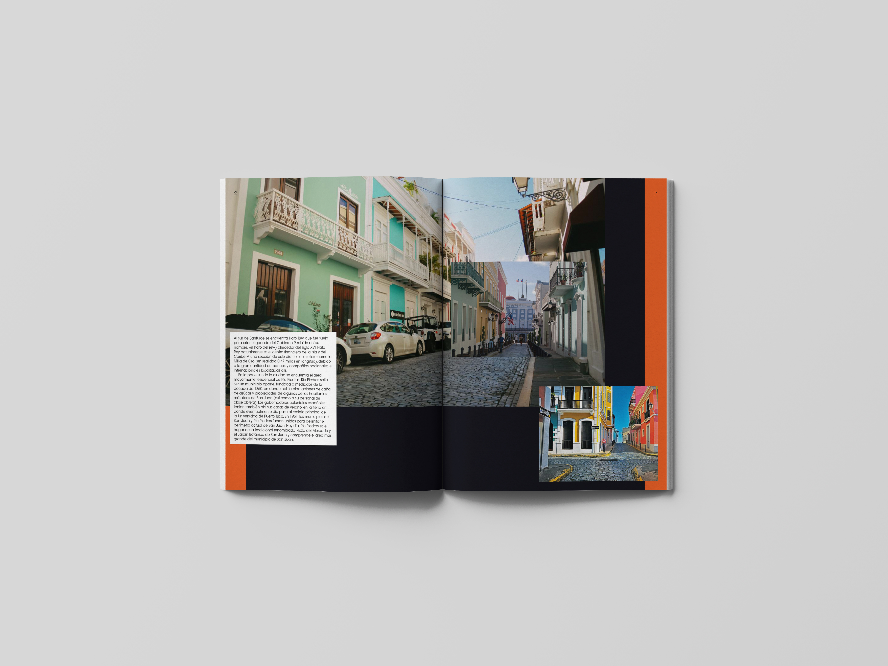
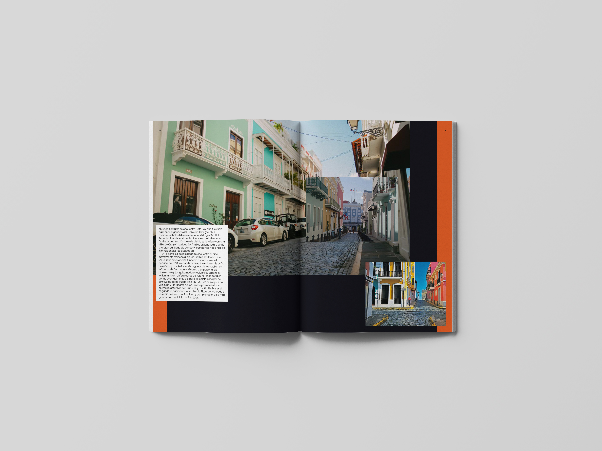

Fiestas de la Calle San Sebastián
Este proyecto consistió en el diseño, elaboración y generación de un producto editorial de un ámbito turístico/cultural.

Teníamos que realizar una publicación centrada en los aspectos promocionales de una ciudad. Habría que definir y plantear un libro de estilo que implique pensar y concretar conceptos básicos y valores esenciales como: efectividad informativa, versatilidad, dinamismo estructural y eclecticismo formal.
El diseño de información es un recurso que teníamos que utilizar a lo largo del trabajo para organizar y presentar de forma útil y atractiva una serie de recopilación de información que este tipo de trabajo genera.


Después de estudiar y analizar la ciudad y la fiesta que teníamos que representar en nuestra publicación, que en este caso era "las Fiestas de la Calle San Sebastián", decidimos cuales eran los conceptos a representar:
· Colorido
· Diverso
· Atrevido
 

Una vez todo esto analizado y estudiado escogimos a los referentes que en este caso los referentes gráficos son Iván Castro, David Carson y Paula Scher. Los referentes históricos o estéticos el Suprematismo, el Constructivismo y el Dadaísmo. El referente cultural es la comparsa de los cabezones.
Los elementos de esta revista que la caracterizan son, el lettering que con los diversos tamaños y formas conseguimos representar esa diversidad que podemos encontrar en estas fiestas y tmabén gracias a los tamaños que crean una linea visual de lectura conseguimos obtener ese dinamismo sin perder su capacidad de legibilidad y lecturabilidad, el uso de la tipografía “Avant Garde Gothic“ y sus variantes la cual fue elegida por su versatilidad y tiene una fácil legibilidad y lecturabilidad.
También se han usado unos colores para cada sección de la revista los cuales cada uno de ellos representa una parte de estas fiestas los cuales se unes en una formas sinuosas y orgánicas para la portada como fondo que representan todo el movimiento de los bailes y danzas que se realzan al mismo tiempo que el colorido de esta fiesta y las calles donde se celebra, de la cual se habla en la publicación, se ha usado la superposición de los elementos y el color del fondo para que resalten los colores de las fotografías se vea como una revista atractiva y interesante para ese público al que nos dirigimos y que cuando la vean les llame la atención y se acerquen a leerla.
La superposición de elementos y el fondo de degradados coloridos también se han usado para transmitir el dinamismo, el eclecticismo formal y en parte la versatilidad, que para transmitir esta también se ha usado la tipografía y las pastillas para el texto se han usado para tener una lectura más fácil y fluida, ya que sin ellas al estar superpuesto con las imágenes dificulta la comprensión del mismo y con esto pretendemos conseguir la efectividad informativa facilitando la legibilidad de los textos.